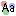
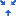
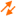
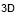

Visualising a large graph will have an impact on performance so hiding everything on the graph can reduce the load on the graphics card. You can still use the histogram and table view to clean up your data before you enable graph visualisation.


The visual window provides a 3D display of a graph.
Graphs are built from two elements; nodes and transactions.
The graph can navigated using the mouse and keyboard keys. Menus can be used to manipulate the graph. Some menus have keys assigned to them by default, but you can change the key assignments using Tools → Options → Keymap.
In general, the left button is for selecting, the middle button for rotating, and the right button for dragging and panning.
| Left-click on an element | Select a node or transaction. |
| Left-click on the background | Set focus on the graph window. |
| Double-left-click on the background | Deselect all elements |
| Shift-left-click on an element | Select additional nodes and/or transactions. |
| Ctrl-left-click on an element | Toggle selection of nodes and/or transactions. |
| Left-drag | Select multiple nodes and/or transactions. |
| Shift-left-drag | Select additional multiple nodes and/or transactions. |
| Ctrl-left-drag | Toggle selection of multiple nodes and/or transactions. |
| Middle-drag | Rotate the graph.
Dragging the mouse up and down the middle of the window will rotate around the X axis. Dragging the mouse across the middle of the window will rotate around the Y axis. Dragging the mouse along the edges of the window will rotate around the Z axis. |
| Right-drag on background | Pan the graph. |
| Right-drag on node | Drag the node and other selected nodes. |
| Right-drag on transaction | Pan the graph. |
Each graph display has a sidebar containing some commonly used actions.
| Draw/don't draw nodes. | |
| Draw/don't draw connections. | |
|  | Draw/don't draw labels on nodes. |
| Draw/don't draw labels on connections. | |
|
Draw/don't draw blazes. |
| Contract selected nodes into a composite node | |
|  | Expand a composite node back to nodes and transactions |
| Show all nodes, connections, blazers and labels. With this setting, the Graph Visibility Threshold is ignored. | |
|
Hide all nodes, connections, blazers and labels when the Graph Visibility Threshold is reached.
Visualising a large graph will have an impact on performance so hiding everything on the graph can reduce the load on the graphics card. You can still use the histogram and table view to clean up your data before you enable graph visualisation. |
|
Freeze the camera from performing annimations when you run Data Access View plugins. |
|
When disabled, allow the graph view to change when running Data Access View plugins. |
These buttons specify which display elements are drawn. Nodes are drawn using an icon and a background shape and color. Connections (links, edges, or transactions) are drawn using a color: when links and edges are drawn and the underlying transactions have different colors, grey is used. Text can be drawn above and below nodes: use the graph-level attributes labels_bottom and labels_top to determine what text is drawn.
 | Draw links. |
|  | Draw edges. |
| Draw transactions. |
These buttons specify whether links, edges, or transactions will be displayed.
| Two dimensional rotation | |
|  | Three dimensional rotation |
Some graphs are two-dimensional (all nodes have z equal to 0), so it is convenient to only allow one axis of rotation. With 2D selected, rotation is restricted to the z-axis. With 3D selected, rotation is allowed in the x, y, and z axes. Either way, rotation works as described above.
The default for rotation can be changed at Tools → Options → CONSTELLATION → Graph drawing.